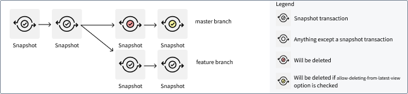
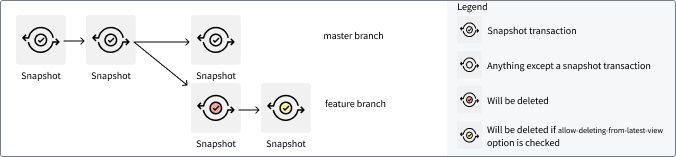
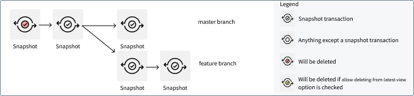
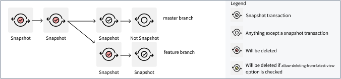

The following list describes the transaction selectors available for use when configuring retention policies in the Retention application.
Text in this format represents a parameter that could be defined on each policy.
Delete transactions that appear only in the given branch.
Takes 1 argument: branch
Example: "Only in branch main"

Setting "Only in branch main" will not delete the first two SNAPSHOT transactions as they are also the root transaction for the SNAPSHOT transaction on the feature branch.
Delete all transactions except ones in the given branch.
Takes 1 argument: branch
Example: "Not in branch main"

:::callout{theme="warning"} The transaction count selector allows you to define the transactions to retain. It is not to indicate the transactions that will be deleted. :::
Retains only the transactions that are among the number of transaction to retain most recent data-containing transactions data on any branch. A transaction is defined to be data-containing if, and only if, the following statements are true:
DELETE transaction.All aborted transactions are not data-containing and will be deleted. As this selector does not differentiate between SNAPSHOT, APPEND, or UPDATE transactions, we recommend using the viewCount selector in incremental pipelines.
Takes 1 argument: number of transactions to retain
Example: "transaction count 2"

This selector ensures that at least 2 SNAPSHOT transactions are available on each branch. The feature branch could have 3 transactions; the oldest transaction is also the 2nd transaction on branch main, so it is not deleted.
:::callout{theme="warning"} The view count selector allows you to define the transactions in views to retain. It is not to indicate the transactions in views that will be deleted. :::
The view count selector retains only transactions in the last number of views to retain dataset views. As a view is defined to comprise of only committed transactions, any aborted transactions are also deleted. For example, numViewsToRetain: 1 means that all transactions prior to the latest view (that is, all transactions prior to the latest SNAPSHOT transaction) and all aborted transactions are deleted.
Takes 1 argument: number of views to retain
Example: "view count 1"

This selects transactions older than the given duration.
Takes 1 argument: duration
For datasets with projections, this selector selects the transactions that have been propagated to all projections.
This selector selects all transactions that are not in the latest view (as well as all transactions currently in views where all files have been superseded by files in newer transactions). This is useful for datasets which have many transactions in the latest view, and should only be used with the Allow deletion from latest view flag.
Selects transactions only present in views older than a given duration. A view age is defined as time between the close time of the latest transaction in the view and now. If a view has an open transaction, none of the transactions in that view will be deleted.
Takes 1 argument: duration
Selects transactions which are derived. These are transactions generated from running a build. Transactions created from manually uploading data or through Data Connection are not considered derived.